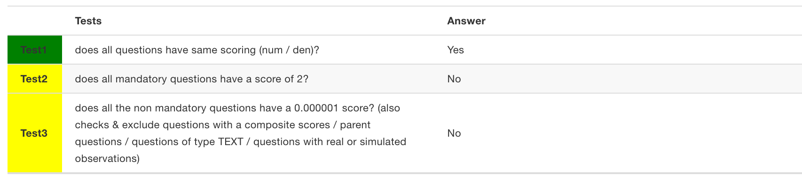
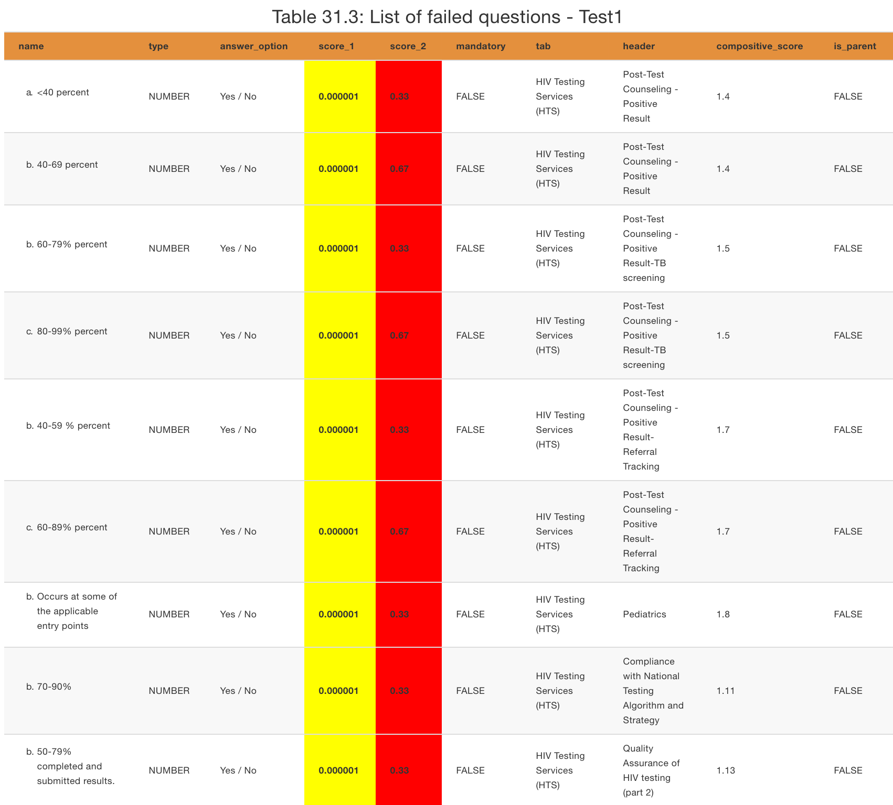

1 How to read this report
1.1 Scope of tests
For each checklist, we perform three tests:
Test 1- to determine whether a list has the same scoring on both numerators and denominators, i.e., score_1, score_2.Test 2- to determine whether mandatory questions have a scoring of2.Test 3- to determine whether all the non-mandatory questions have a scoring of0.000001. Here, there are a few exceptions; questions with composite scores (sections), the parent questions, questions of typeTEXT,and questions with a real or simulated observation.
1.2 Interpreting the tests

Figure 1.1: Example of a test result
All these tests will answer either Yes / No once the tests are completed:
Yes- indicatespass,and the answer is highlighted in yellow.No- indicatesworth questioning.This doesn’t necessarily mean a failed test; there could be issues that need to be double-checked with a close eye. Usually, a table showing the lists of “failed questions” will be presented next to it. If not present, this means that we’ve hidden the exempted questions or there is nothing to double check. Meaning, the test actually passed.
1.2.1 Interpreting the listed questions.

Figure 1.2: Example of table with failed questions
The table presents questions by:
name- how they appear on the App.type- indicating their format.answer_option- their answer options, mostlyYes/No.score_1- the numerator score.score_2- the denominator score.mandatory - whether a critical or a none critical question.TRUEorFALSE`tab- the tab where they are located in the form/template/App.header- their section in the form/template/App.compositive_score- whether they contribute to the scoring or not. If yes, it should be specified.is_parent- is it a parent question?TRUEorFALSE.
score_1 is highlighted in yellow when the scores are correct (test 3 is pass) and red when they are not correct (test 3 failed).
score_2 is always highlighted in green if the questions have the same scoring (passed test 1) and red if they don’t - a worry for the dev team.